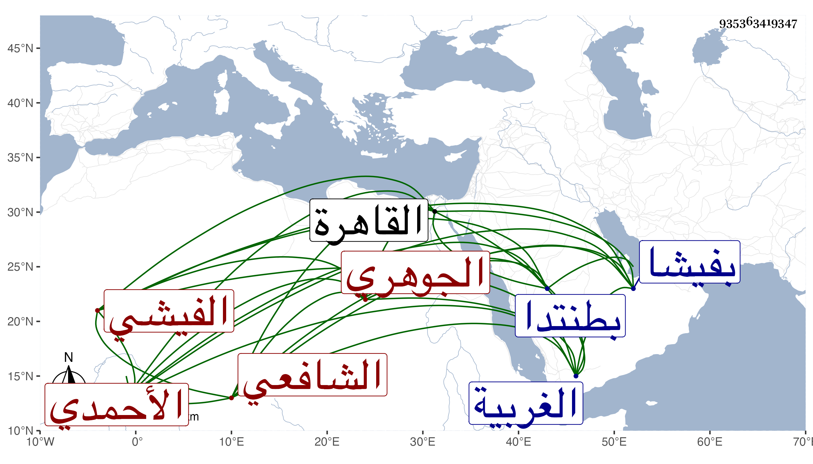

0902Sakhawi.DawLamic.ITO20230111-ara1.EIS1600.935363419347
Biography ID: 935363419347
553
محمد بن محمد بن محمد بن عبد الرحمن بن يوسف الشمس أبو الخير بن أبي الفضل بن أبي عبد الله الجوهري الأصل الفيشي الأحمدي الشافعي الماضي أبوه وجده ويعرف كهما بابن بطالة . ولد تقريبا في أوائل سنة سبع عشرة وثمانمائة بفيشا المنارة من الغربية وحفظ القرآن والتنبيه وألفية النحو ، وقدم القاهرة فقطن زاوية أبيه بقنطرة الموسكي واشتغل رفيقا للفخر عثمان المقسي وابن قاسم عند الشرف السبكي والجمال الأمشاطي والونائي والقاياتي والبوتيجي في الفقه وأصوله والعربية وغيرها ولازم شيخنا ولكنه لم يدم الاشتغال بل قام بأمر الزراعة ونحوها وبذل همته في ذلك . وحج في سنة تسع وسبعين صحبة ركب الأتابك والأقصرائي وابتدأ معهما بالزيارة النبوية ورجع بعد انقضاء الحج وقطن بطنتدا وتلك النواحي وتكرر اجتماعي به في مجلس شيخنا ثم بعد وهو إنسان متودد ذكي حسن الملتقى والمحاسن . مات إما في آخر سنة ست وتسعين أو أول التي تليها رحمه الله .
